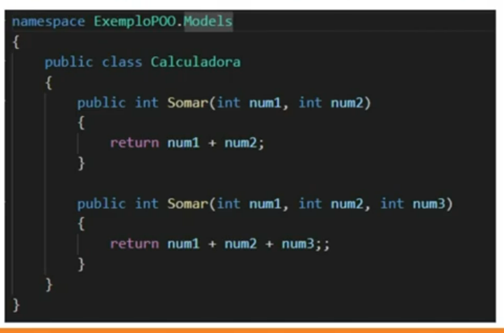
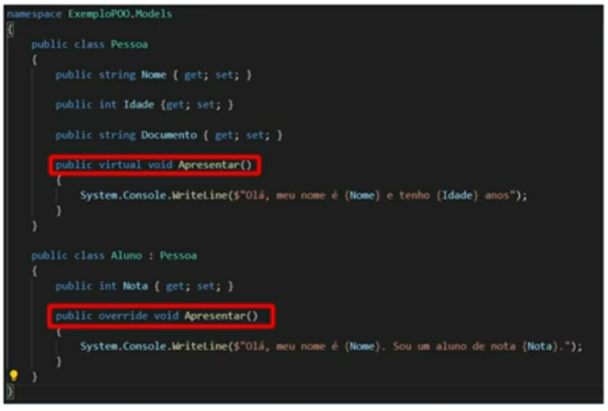

Professor Leonardo Buta - tem um canal no youtube: Leonardo Buta
É um paradigma de programação, uma técnica, uma maneira de fazer programação. Esse paradigma tenta aproximar o mundo real da programação, pois tenta abstrair o mundo real dentro do código.
Os pilares são independentes e harmônicos, com exceção do polimorfismo que depende de herança.
Os principais conceitos da POO são as classes e objetos. Uma classe é um molde e um objeto é algo criado a partir desse molde.
Existem vários de paradigmas, dentre os quais destacam-se:
Representar um objeto do mundo real considerando apenas os atributos importantes para o projeto. Por exemplo, uma criança que está em fase escolar tem diversas características, mas para um sistema informático de orientação a objetos da sua escola, o importante é o número da matrícula dela, as suas notas, faltas, nome, sala, série, dentre outros que fazem sentido no contexto da escola.
Proteger elementos de uma classe e definir os limites de sua alteração. Também serve para ocultar ou expor um comportamento se necessário, deixando a aplicação mais segura contra alterações equivocadas.
Indica que um atributo ou método só é acessível dentro da classe, sendo que para modificar ou atuar nessa propriedade deve-se passar por um método que seja público.
O encapsulamento está diretamente ligado a modificadores de acesso (public, private, internal, protected, etc...).
Também um dos pilares da POO. Permite reutilizar atributos, métodos e comportamentos de outra classe.
É como se copiássemos os atributos e métodos da classe pai e os colássemos nas classes filhas.
Podemos sobrescrever um método herdado por uma filha de uma classe pai, fazendo com que seu comportamento seja mais adequado e específico para aquela filha.
Dentro de uma classe podemos criar dois métodos com o mesmo nome, tendo os dois assinaturas diferentes.
Exemplo
É a sobrescrita de um método de uma classe pai por uma classe filha. Essa sobrescrita acontece dentro do contexto da filha.
Exemplo
Interessante notar que no exemplo de polimorfismo em tempo de execução acima, temos que colocar o tipo virtual na classe pai e override no método herdado na classe filha, esses dois adjetivos devem estar junto do tipo do método (void, por exemplo).
É um conceito fortemente ligado a heranças. Elas tem apenas a função de ser pai, não podemos instanciar um objeto com base nela, mas apenas criar outras classes herdando suas propriedades. Os métodos também podem ser classificados como abstratos, sendo que métodos abstratos devem ser obrigatoriamente sobrescritos por meio do polimorfismo em tempo de execução.
Ao contrário da abstrata ela não pode ter classes filhas. Métodos e atributos também podem ser selados. No caso de métodos não se pode fazer polimorfismo daqueles que são selados. Nenhuma classe pode herdar propriedades de uma classe selada.
Para marcar uma classe, método ou atributo como selada temos que passar o adjetivo <<sealed>>. Lembrando que os adjetivos são passados antes do nome da classe ou propriedade.
Classes seladas podem herdar, não podem passar herança.
A classe System.Object é a mãe de todas as classes .NET. Todas as classes derivam direta ou indiretamente dessa classe Object. Ela tem por objetivo prover serviços de baixo nível para as suas filhas.
É possível sobrescrever alguns métodos da classe System.Object
Interface é um contrato que pode ser implementado por uma classe. Não pode ser instanciada diretamente assim como a classe abstrata. A diferença entre classe e interface é que uma classe só pode herdar props de apenas de uma classe, mas pode herdar props de inúmeras interfaces.
Caso um método na interface não tenha uma lógica associada ("uma implementação padrão") esse método deve obrigatoriamente receber uma lógica ("ser implementado") na classe que herda ("implementa") essa interface; caso ele tenha uma implementação padrão eu posso optar em sobrescrever (implementar) ou não este método na classe que herda a interface. Esse tipo de comportamento se deu a partir do C# 8, antes não era possível fazer implementação padrão de métodos em interfaces.
A seguir classes estáticas para trabalho com arquivos, pastas e rotas:
O acesso a essas classes é possível a partir do uso do namespace System.IO. O uso do namespace significa escrever "using 'nome do namespace'" no início do documento.
Classes estáticas não são instanciáveis, ou seja, nós as usamos diretamente.
Directory.GetDirectories(diretorio_raiz) - retorna um array com os subdiretórios presentes no diretorio_raiz.
Directory.GetDirectories(diretorio_raiz,"*",SearchOption.AllDirectories) - retorna um array com todos os subdiretórios abaixo do diretorio_raiz.
Directory.GetFiles(diretorio_raiz) - retorna um array com os arquivos que estão no diretorio_raiz
Directory.GetFiles(diretorio_raiz,"*",SearchOption.AllDirectories) - retorna um array com todos os arquivos que estão abaixo do diretorio_raiz
Directory.GetFiles(diretorio_raiz,"*.txt",SearchOption.AllDirectories) - retorna um array com todos os arquivos txt que estão abaixo do diretorio_raiz
Directory.CreateDirectory(caminho) - cria um diretório baseado no caminho passado e retorna informações sobre o diretório criado.
Uma das informações retornadas é o FullName que passa o path completo do diretório criado.
Directory.Delete(caminho) - exclusão de pasta sem arquivos e subpastas
Directory.Delete(caminho, bool apagarFilhos) - caso o diretório tenha arquivos ou subpastas, temos que passar o segundo pâmetro como true para apagar tudo.
Essa exclusão é definitiva, ou seja, o arquivo deletado não vai para a lixeira, ele é excluído do HD (da memória).
Nos métodos listados acima, o asterisco indica que a busca do texto vai admitir qualquer sequência de caracteres.
File.AppendAllText(caminho, conteudo) - abre um arquivo, adiciona o conteúdo (string) passado e fecha o arquivo. Cria um novo arquivo caso o que estamos referenciando ainda não exista.
public void funcao(string caminho, List<string> conteudo)
{
using(var stream = File.AppendText(caminho))
{
foreach(var linha in conteudo)
{
stream.WriteLine(linha);
}
}
}
Tal qual o CreateText, o AppendText usa gera um objeto StreamWriter o qual irá operar a escrita de anexos ao documento já existente.
File.ReadAllLines(caminho) - retorna um array de strings, sendo cada item o array uma linha do arquivo.
public void funcao(string caminho)
{
// var linha = string.Empty; //não sei por que usar essa variável
using(var stream = File.OpenText(caminho))
{
while((linha = stream.ReadLine()) != null)
//while(stream.ReadLine() != null) //acredito dar o mesmo resultado que o com o while acima
{
System.Console.WriteLine(linha);
}
}
}
O OpenText gera um StreamReader para que possamos ir lendo cada linha de forma pausada, não a leitura inteira do documento de uma vez.
Movendo um arquivo
File.Move(caminho_velho, caminho_novo) - podemos no caminho novo também escolher um novo nome para o arquivo. Inicilmente não é permitido que no caminho novo tenha um arquivo de mesmo nome, mas podemos passar um terceiro parâmetro para o método, permitindo que haja sobrescrita no novo caminho.Copiando um arquivo
File.Copy(caminho_velho, caminho_novo) - podemos no caminho novo também escolher um novo nome para o arquivo. Inicilmente não é permitido que no caminho novo tenha um arquivo de mesmo nome, mas podemos passar um terceiro parâmetro para o método, permitindo que haja sobrescrita no novo caminho.
Deletando um arquivo
File.Delete(caminho) - esse método é irreversível, ele é apagado da memória.